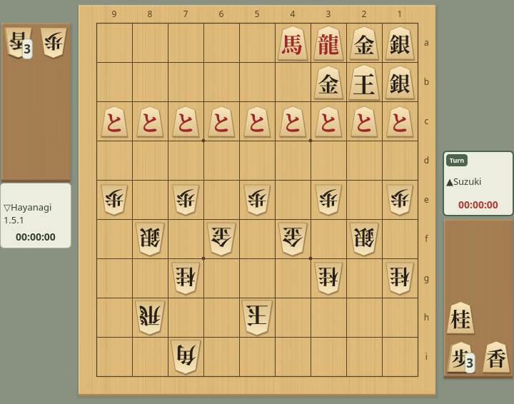
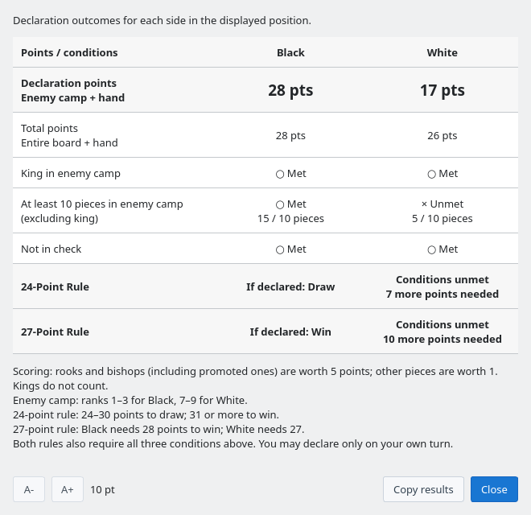
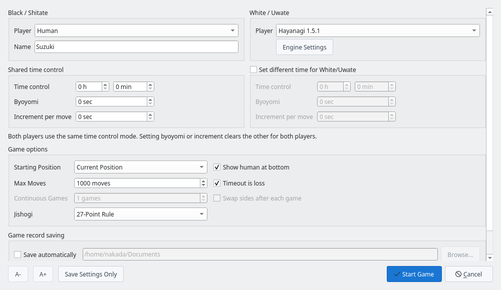
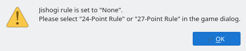
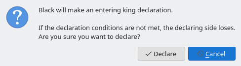
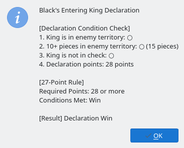
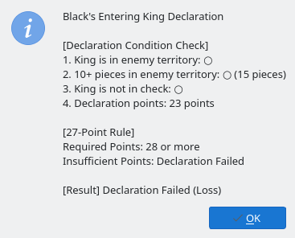
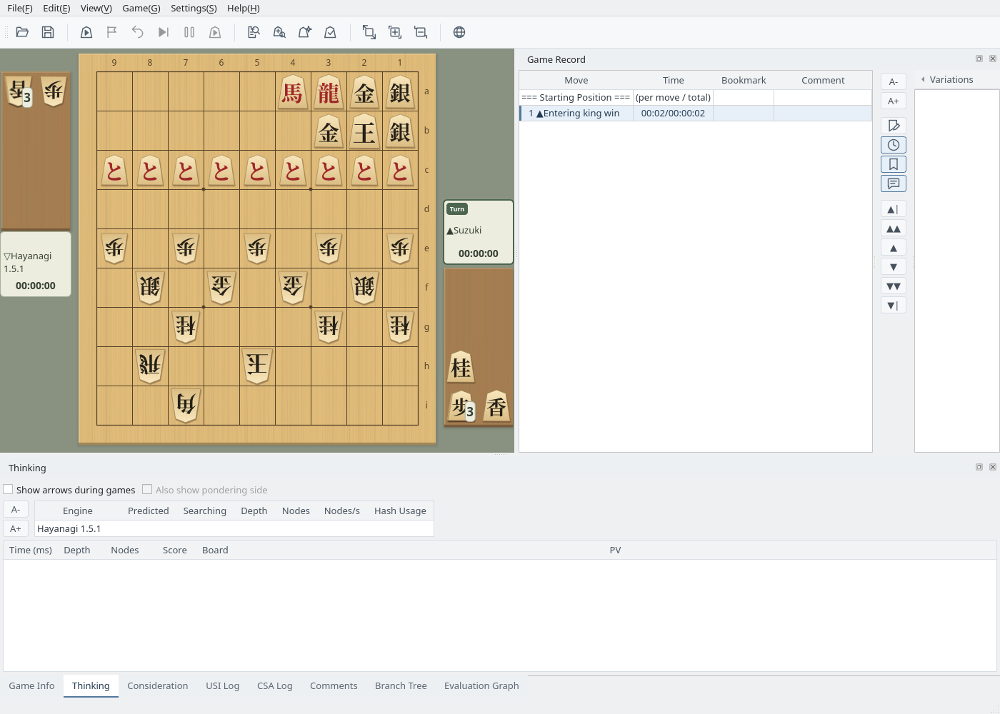

Check jishogi points and judge an entering king declaration
Screenshots were captured on Linux with the English interface.
See the points and declaration conditions of the displayed position
When both kings have entered the opponent's camp, it becomes hard to win by checkmate. In such positions you can check the jishogi points and make an entering king declaration. Here Black's king is on 2b and White's king on 5h.

Entering king position: Black has 15 pieces in the enemy camp and 28 points including pieces in hand
Choose Game → Jishogi Points to see what would happen if Black or White declared in the displayed position. It is available outside games, too.
Copy results copies the contents to the clipboard. The enemy camp is ranks a–c for Black and g–i for White.

Jishogi Points: Black has 28 points, a win under the 27-point rule and a draw under the 24-point rule; White does not have enough pieces in the camp
Declare on your own turn during a game
For games where you may declare, choose 24-Point Rule or 27-Point Rule for Jishogi in the game dialog.
| 24-Point Rule | 31 or more declaration points wins; 24–30 points is a draw (impasse) |
| 27-Point Rule | Black needs 28 or more points and White 27 or more to win |
Both rules also require the three declaration conditions. If you try to declare while the rule is None, you are asked to choose a rule.

Game dialog: choose 24-Point Rule or 27-Point Rule for Jishogi

Declaring while the rule is None: you are asked to choose a rule in the game dialog
On your own turn, choose Game → Entering King Declaration. A confirmation appears; click Declare to declare. If the conditions are not met, the declaring side loses, so check Jishogi Points first.
A human player declares on their own turn. You cannot declare on the engine's turn, and the menu item is disabled in engine vs. engine games.

Confirmation: Declare to declare, or Cancel to continue the game
The declaration is judged and the game ends
When all the conditions are met, the declaration wins and the game ends. The result shows each condition and the points the rule requires.

Declaration win: the conditions are met and the 28 points the 27-point rule requires are reached
If a condition is not met, for example because the points are short, the declaration fails and the declaring side loses (loss by illegal move). Under the 24-point rule, 24–30 points is Jishogi (Draw).

Declaration failed: 23 points against the 28 the 27-point rule requires, so the declaring side loses
After a declaration, the game record shows ▲Entering king win (▲Loss by illegal move for a failed declaration and ▲Impasse for a 24-point draw). A declaration by an engine is judged under the same rule and its result is shown; if the conditions are not met, the declaring engine loses (when the jishogi rule is None, the 27-point rule is used). In CSA network games the declaration is sent to the server, which judges it.

After the declaration: ▲Entering king win is recorded in the game record